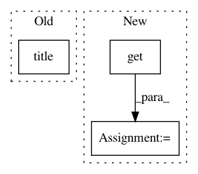

4a8d1ffcf12287d632fb25ef484344d68d987818,skopt/plots.py,,plot_convergence,#,11
Before Change
color="r", lw=1,
label="True minimum")
plt.title("Convergence plot")
plt.xlabel("Number of calls $n$")
plt.ylabel(r"$\min f(x)$ after $n$ calls")
plt.grid()
After Change
// <3 legacy python
ax = kwargs.get("ax", None)
true_minimum = kwargs.get("true_minimum", None)
yscale = kwargs.get("yscale", None)
if ax is None:
ax = plt.gca()
In pattern: SUPERPATTERN
Frequency: 3
Non-data size: 3
Instances
Project Name: scikit-optimize/scikit-optimize
Commit Name: 4a8d1ffcf12287d632fb25ef484344d68d987818
Time: 2016-07-20
Author: g.louppe@gmail.com
File Name: skopt/plots.py
Class Name:
Method Name: plot_convergence
Project Name: home-assistant/home-assistant
Commit Name: ee5e1fa35563b69aa2ccd078f8ad457ef70579cf
Time: 2018-10-08
Author: MatteGary@users.noreply.github.com
File Name: homeassistant/components/climate/daikin.py
Class Name: DaikinClimate
Method Name: get
Project Name: jazzband/django-debug-toolbar
Commit Name: f4666321048d04514a4900b7301d61a918082bfd
Time: 2013-11-22
Author: aymeric.augustin@m4x.org
File Name: debug_toolbar/panels/redirects.py
Class Name: InterceptRedirectsPanel
Method Name: process_response